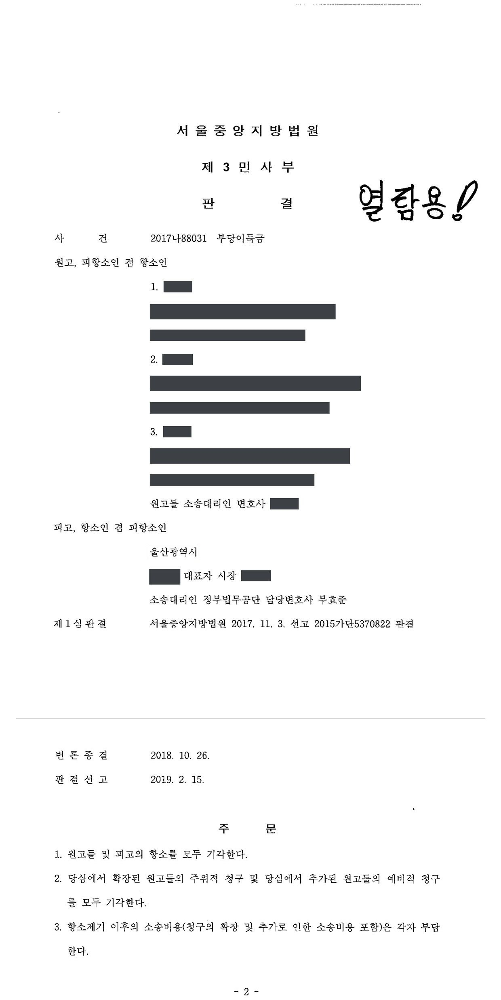

지방자치단체 도로 부지 부당이득반환 청구소송 (1·2심)
서울중앙지방법원 2015가단5370822 · 서울중앙지방법원 2017나88031 · 담당변호사 부효준
판결문


사건의 요지
1920년대부터 도로로 사용된 토지의 상속인들이 지방자치단체의 점유를 이유로 부당이득 반환을 구한 사건으로, 점유 개시 경위와 배타적 사용·수익권 포기 여부, 임료 산정이 다투어졌습니다. 항소심에서 확장·추가된 청구는 모두 받아들여지지 않았습니다.
사건의 주요 내용
이 사건 토지(지목 도로)는 1921년 무렵 일제강점기의 시구개정(도시계획)에 따라 개설된 도로에 편입된 뒤, 지방자치단체가 1972년 무렵 확장공사를 거쳐 현재의 시도(차도·화단·자전거도로·보도)로 관리해 온 땅입니다. 등기부에는 지목이 도로로 바뀐 뒤 원고들의 선대 명의로 소유권이전등기가 마쳐져 있었고, 그 상속인인 원고 3명이 2015년 지방자치단체를 상대로 도로 점유에 따른 임료 상당의 부당이득 반환을 청구하였습니다. 부효준 변호사는 피고 지방자치단체를 대리하였습니다.
제1심(2017년 11월)은 토지가 피고의 점유 개시 당시 이미 사실상 도로였다고 보아, 공도를 기준으로 평가한 임대료(2010년 11월 28일부터 5년분 55,523,996원, 월 1,115,766원)의 3분의 1에 해당하는 금액만 인용하였습니다. 양쪽이 모두 항소하였고, 원고들은 항소심에서 공도 기준 임대료 전액(5년분 합계 55,523,995원과 월 1,115,764원)으로 청구를 확장하면서, 예비적으로 개별요인을 보정한 평가액(5년분 합계 26,283,162원과 월 528,093원)을 구하는 청구를 추가하였습니다.
항소심은 2019년 2월 원고들과 피고의 항소를 모두 기각하고, 항소심에서 확장된 주위적 청구와 추가된 예비적 청구도 모두 기각하여 제1심의 결론을 그대로 유지하였습니다.
쟁점
- 현재 지방자치단체가 관리하는 시도(공도)라는 사정만으로 점유 개시 당시부터 공도였다고 보아 임료를 공도 기준 전액으로 산정할 수 있는지
- 종전부터 사실상 도로로 쓰이던 토지의 임료를 공도 기준 임대료의 3분의 1로 평가하는 것이 타당한지, 개별요인 보정 평가로 대신할 수 있는지
- 일제강점기 시구개정 사업으로 도로에 편입된 토지에 관하여 지방자치단체가 보상을 통하여 소유권을 취득하였거나 소유의 의사로 점유를 개시하였다고 볼 수 있는지
원고의 주장
- 이 사건 토지를 포함한 구도로는 1921년 무렵 도시계획에 따라 개설된 도로에 편입된 뒤 피고가 점유를 승계하여 1972년 무렵 확장공사를 거쳐 현재의 시도가 되었고, 지금은 차도·화단·자전거도로·보도로 구성된 피고 관리의 시도이므로 도로법상 공도임이 명백하며, 따라서 부당이득액은 공도를 전제로 평가한 임대료 전액을 기준으로 산정해야 한다고 주장하였습니다.
- 설령 공도가 아닌 사실상의 사도 부지로 보더라도 공도 기준 임대료의 3분의 1로 평가할 것이 아니라 비교표준지와의 개별요인 비교를 적절히 보정한 평가금액을 기준으로 산정해야 한다고 주장하였습니다.
부효준 변호사의 주장
- 1921년 당시에도 도로규칙·토지수용령 등에 따라 사유지를 도로로 수용할 때 소유자가 보상을 받을 수 있는 법적 절차가 있었고, 구도로 부지는 그 형상에 비추어 시구개정 사업으로 개설된 신작로로 보이며 일제강점기에는 대부분 보상을 하고 토지를 취득하였으므로, 피고나 국가는 당시 보상을 통하여 이 사건 토지를 취득하였다고 주장하였습니다. 물권변동에 의사주의를 택한 구 민법 아래에서는 지금과 같은 공부 정리를 기대할 수 없었다는 점도 들었습니다.
- 피고가 1972년 무렵 도로 개설공사 당시 구도로에 인접한 확장 부분 토지만 적법한 절차로 취득한 것은 구도로 부지는 일제강점기에 이미 취득하였다고 확인하거나 믿었기 때문이고 원고들이 소유자로서 이의를 제기한 적도 없으므로, 피고는 소유의 의사로 점유를 개시하였다고 주장하였습니다.
법원의 판단
법원은 국가나 지방자치단체가 종전부터 일반 공중의 교통에 사실상 공용되던 토지를 도로로 점유하게 된 경우에는 도로로 제한된 현황대로 평가하고, 종전에 공용되지 않던 토지를 비로소 도로로 점유한 경우에만 편입 당시의 현실적 이용상황대로 평가한다는 대법원 판례(2001. 1. 19. 선고 2000다58576, 58583 판결)를 전제로, 이 도로가 현재 시도라는 사정만으로 피고가 점유를 개시할 당시 토지가 시도 등 공도로 개설·지정되어 있었다고 볼 자료가 없다고 하였습니다.
따라서 부당이득액은 사실상 도로로 제한받는 상태를 전제로 산정해야 하고, 토지보상법 시행규칙 제26조 제1항 제2호(사실상의 사도 부지는 인근 토지 평가액의 3분의 1 이내)에 따라 공도 기준 임대료의 3분의 1로 평가함이 타당하다고 보아 원고들의 주위적·예비적 주장을 모두 받아들이지 않았습니다.
피고의 주장에 대하여는, 피고나 국가가 1921년 당시 적법한 절차로 토지를 취득하였다는 자료가 없고 오히려 지목이 도로로 바뀐 뒤 선대 명의로 소유권이전등기가 마쳐졌는데 적법하게 수용되었거나 보상을 받았다면 그런 등기가 이루어지지 않았을 것이라는 이유로 보상을 통한 취득 주장을 배척하였습니다. 선대 명의의 등기가 유지되고 있고 보상 취득 자료가 없어 적법한 절차에 따른 소유권 취득 가능성을 수긍할 수 없는 이상 소유의 의사로 점유를 개시하였다고 볼 수도 없다고 하여 자주점유 주장도 받아들이지 않았습니다.
결국 제1심 판결이 정당하다고 보아 원고들과 피고의 항소를 모두 기각하고, 항소심에서 확장·추가된 원고들의 청구도 모두 기각하였습니다. 항소 제기 이후의 소송비용은 각자 부담하도록 하였습니다.
국가 또는 지방자치단체가 도로로 점유ㆍ사용하고 있는 토지에 대한 차임 상당의 부당이득액을 산정하기 위한 토지의 기초가격은, 국가 또는 지방자치단체가 종전부터 일반 공중의 교통에 사실상 공용되던 토지에 대하여 도로법 등에 의한 도로 설정을 하여 도로관리청으로서 점유하거나 또는 사실상 필요한 공사를 하여 도로로서의 형태를 갖춘 다음 사실상 지배주체로서 도로를 점유하게 된 경우에는 도로로 제한된 상태 즉 도로인 현황대로 감정평가하여야 하고, 국가 또는 지방자치단체가 종전에는 일반 공중의 교통에 사실상 공용되지 않던 토지를 비로소 도로로 점유하게 된 경우에는 토지가 도로로 편입된 사정은 고려하지 않고 그 편입될 당시의 현실적 이용상황에 따라 감정평가하여야 하는바(대법원 2001. 1. 19. 선고 2000다58576, 58583 판결 등 참조), 원고들이 주장하는 바와 같이 이 사건 도로가 시도라는 사정만으로, 이 사건 도로 개설 전 이 사건 토지가 시도로 개설되거나 지정되었다고 볼 수는 없고, 달리 피고가 이 사건 도로를 개설하면서 이 사건 토지에 대한 점유를 개시할 당시 이 사건 토지가 시도 등 공도로 개설되거나 지정되었다고 볼 아무런 자료가 없으므로, 피고의 부당이득액수는 사실상 도로로 제한받는 상태를 전제로 산정해야 한다.
서울중앙지방법원 2017나88031 판결 이유 '2. 나. 1) 원고들의 주장에 대한 판단'
한편, 이 사건 토지의 이용현황이 공도임을 기준으로 한 2010. 11. 28.부터 2015. 11. 27.까지 총 임대료는 55,523,996원, 2014. 11. 28.부터 2015. 11. 27.까지 월 임대료는 1,115,766원인 사실은 앞서 본 바와 같고, 공익사업을 위한 토지 등의 취득 및 보상에 관한 법률 시행규칙 제26조 제1항 제2호는 사실상의 사도의 부지는 인근토지에 대한 평가액의 1/3 이내로 평가하도록 규정하고 있는바, 사실상 도로로 사용되던 이 사건 토지는 위 공도를 기준으로 한 임대료의 1/3로 평가함이 타당하다. 따라서 원고들의 위 주장은 모두 이유 없다.
서울중앙지방법원 2017나88031 판결 이유 '2. 나. 1)'(임료 평가 기준)
이 사건 토지에 관한 망인 명의의 소유권이전등기가 유지되어 있고 피고나 국가가 일제강점기 당시 보상을 통하여 이 사건 토지를 취득하였다고 볼 아무런 자료가 없어 피고의 적법한 절차에 따른 소유권 취득의 가능성을 수긍할 수 없는 이상, 피고가 주장하는 사정만으로 피고가 소유의 의사를 가지고 이 사건 토지에 대한 점유를 개시하였다고 볼 수는 없다. 따라서 피고의 위 주장도 이유 없다.
서울중앙지방법원 2017나88031 판결 이유 '2. 나. 2) 피고의 주장에 대한 판단'
※ 판결 이유 가운데 이 사건의 판단 기준이 된 부분을 그대로 옮긴 것으로, 당사자 이름 등은 가렸습니다.
이 사건이 보여 주는 것
지방자치단체가 관리하는 시도라고 하여 임료가 공도 기준 전액으로 산정되는 것은 아닙니다. 점유를 개시할 당시 이미 일반 공중의 통행에 쓰이던 땅이면 '사실상 도로로 제한받는 상태'로 평가되어 공도 기준 임대료의 3분의 1이 기준이 되고, 개별요인 보정 평가로 그 비율을 높이려는 주장도 받아들여지지 않았습니다. 토지 소유자가 전액을 받으려면 점유 개시 당시 공도로 개설·지정되었다는 자료를 내야 합니다.
반대로 지방자치단체가 보상을 통한 취득이나 자주점유(취득시효)를 주장하려면 당시의 취득·보상 자료가 있어야 하고, 지목이 도로로 바뀐 뒤에도 사인 명의의 소유권이전등기가 유지되어 있다는 사정은 그 주장을 가로막습니다. 이 사건은 원고들이 항소심에서 확장·추가한 청구까지 모두 기각되어 제1심의 3분의 1 기준이 그대로 유지된 사례입니다.
관련 법령공익사업을 위한 토지 등의 취득 및 보상에 관한 법률 시행규칙 제26조 제1항 제2호(사실상의 사도) · 민사소송법 제420조
관련 단어도로 부지 부당이득임료 산정 기준사실상 사도 3분의 1공도 기준 임대료일제강점기 시구개정 도로자주점유취득시효 항변보상을 통한 취득소유권이전등기시도 관리 지방자치단체쌍방 항소 기각지방자치단체 대리
비슷한 처분을 받으셨다면
행정처분은 처분이 있음을 안 날부터 90일 이내에 행정심판이나 취소소송으로 다투어야 하고, 기간이 지나면 돌이킬 수 없는 처분은 집행정지를 서둘러야 합니다. 처분서를 받은 날짜부터 확인해 드립니다.